7 lat gwarancjiNOWOŚĆ
7 lat gwarancjiNOWOŚĆPRESCOT DELUX
3 w 1
Jedna taśma. Trzy poziomy światła: LOW, MEDIUM i HIGH, wybierane sposobem podłączenia.
Poznaj serięPOLSKI PRODUCENT TAŚM LED
Od dyskretnego światła w meblach po oświetlenie całego wnętrza. Znajdź taśmę do swojego projektu.
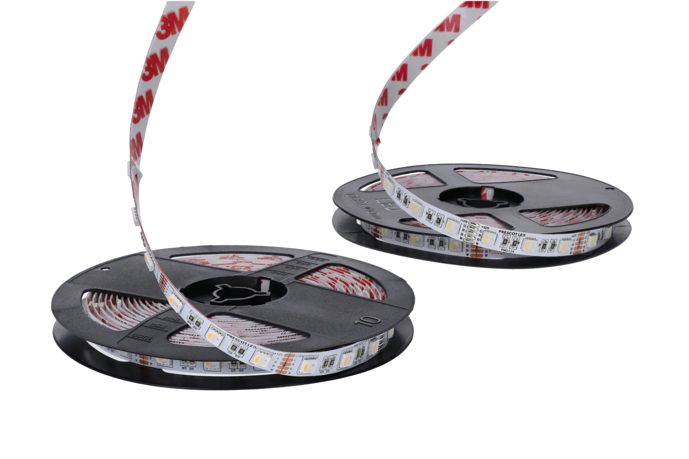
01 — NASZE TAŚMY
Barwa, szerokość, moc i sposób cięcia.
Poznaj różnice i wybierz to, czego potrzebuje Twój projekt.
7 lat gwarancjiNOWOŚĆJedna taśma. Trzy poziomy światła: LOW, MEDIUM i HIGH, wybierane sposobem podłączenia.
Poznaj serię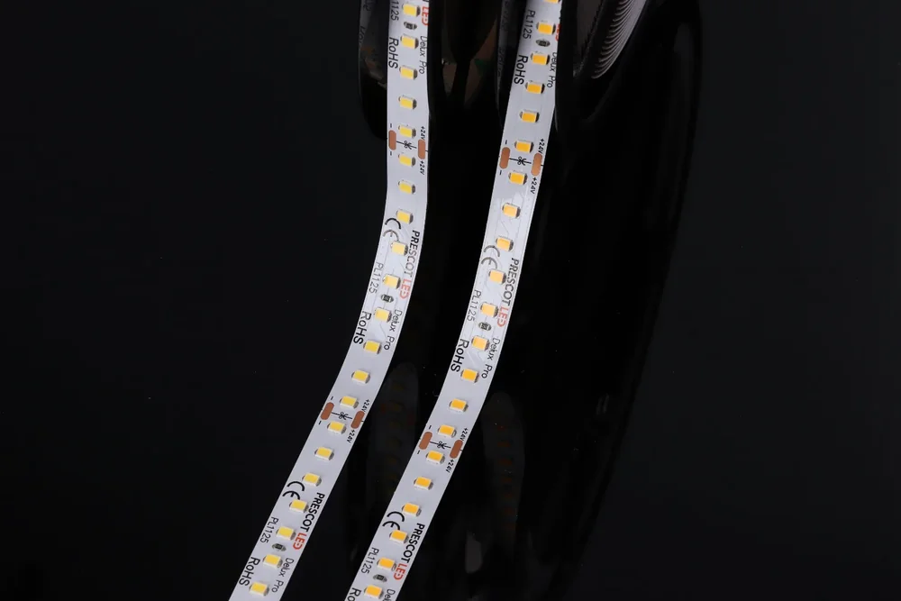
7 lat gwarancjiŚwiatło do profesjonalnych projektów, w których liczy się jasność, pobór energii i codzienna praca instalacji.
Poznaj serięDelikatne światło wydobywa fakturę materiałów, podkreśla kontury i tworzy miękkie przejścia na powierzchniach.
Poznaj serię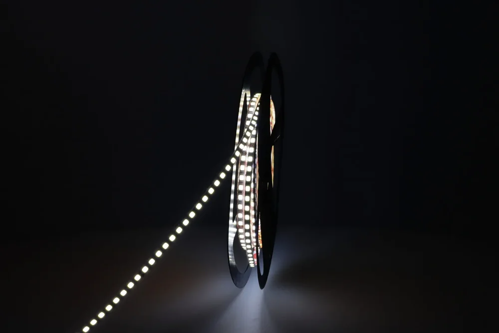
7 lat gwarancjiWąska taśma do smukłych profili oraz detali meblowych, w których przestrzeń montażowa jest ograniczona.
Poznaj serię 7 lat gwarancji
7 lat gwarancjiUniwersalna baza oświetlenia liniowego: do blatów, stanowisk pracy i codziennie używanych przestrzeni.
Poznaj serięCRI 97 dla miejsc, w których kolor materiału, produktu i wykończenia zasługuje na uważne pokazanie.
Poznaj serię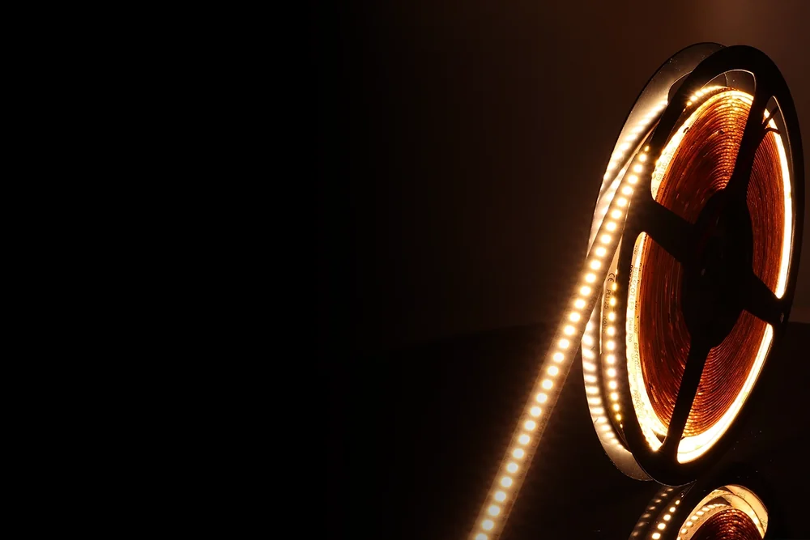
7 lat gwarancjiWysoki strumień świetlny do głównych linii światła, lad, witryn i większych powierzchni roboczych.
Poznaj serię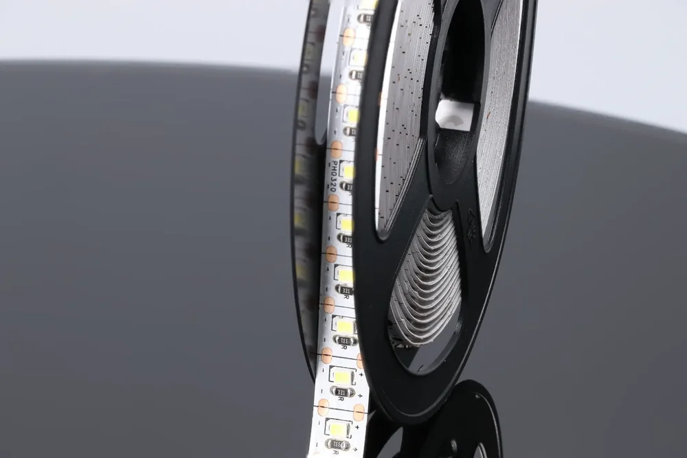
5 lat gwarancjiPrecyzyjnie dopasowany odcinek światła do krótkich profili, narożników i drobnych detali zabudowy.
Poznaj serię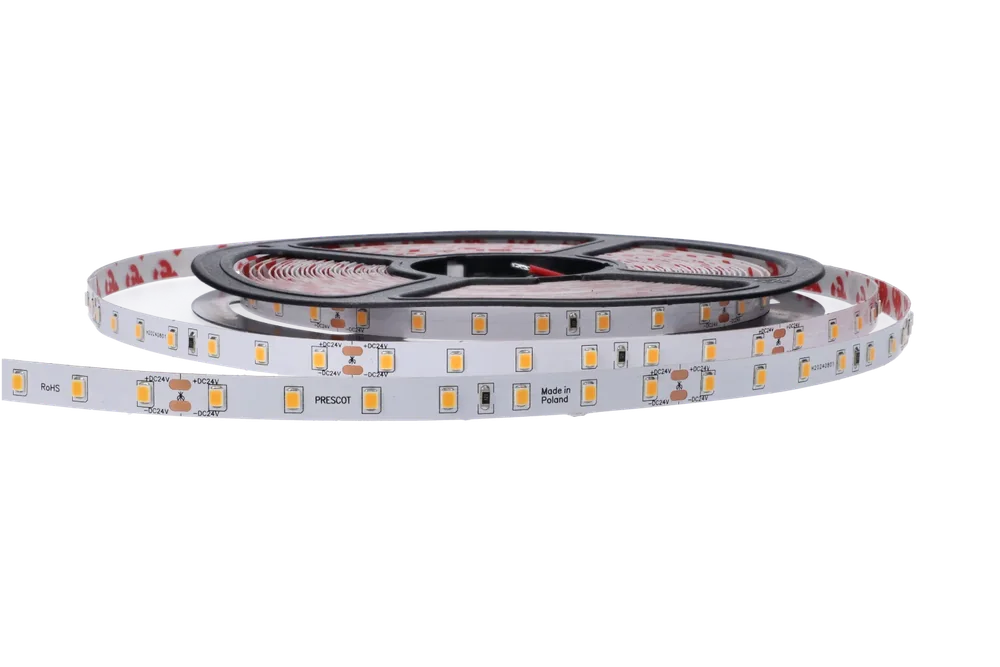
5 lat gwarancjiSpecjalne widmo podkreśla ciepłe, złote i brązowe tony wypieków w ladach i na regałach.
Poznaj serię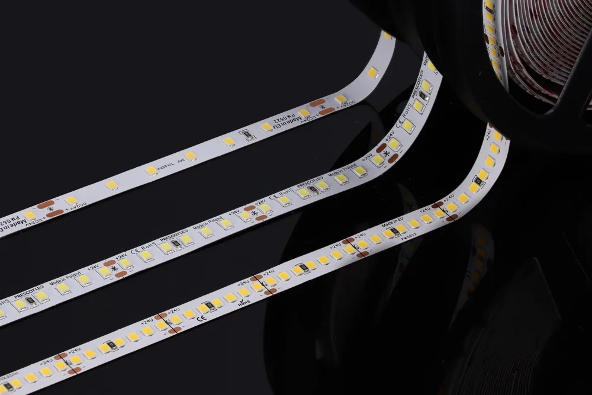
5 lat gwarancjiWybierz układ diod do wymaganej jasności, głębokości profilu i charakteru linii światła.
Poznaj serię 5 lat gwarancji
5 lat gwarancjiDwa warianty do projektów domowych i komercyjnych: od światła we wnęce po doświetlenie blatu.
Poznaj serię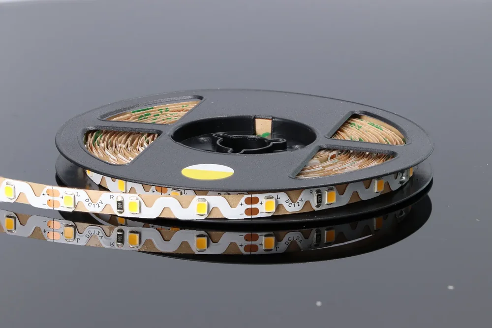
5 lat gwarancjiSpecjalny układ podkładu pozwala prowadzić taśmę na boki, po łukach i nieregularnych kształtach.
Poznaj serię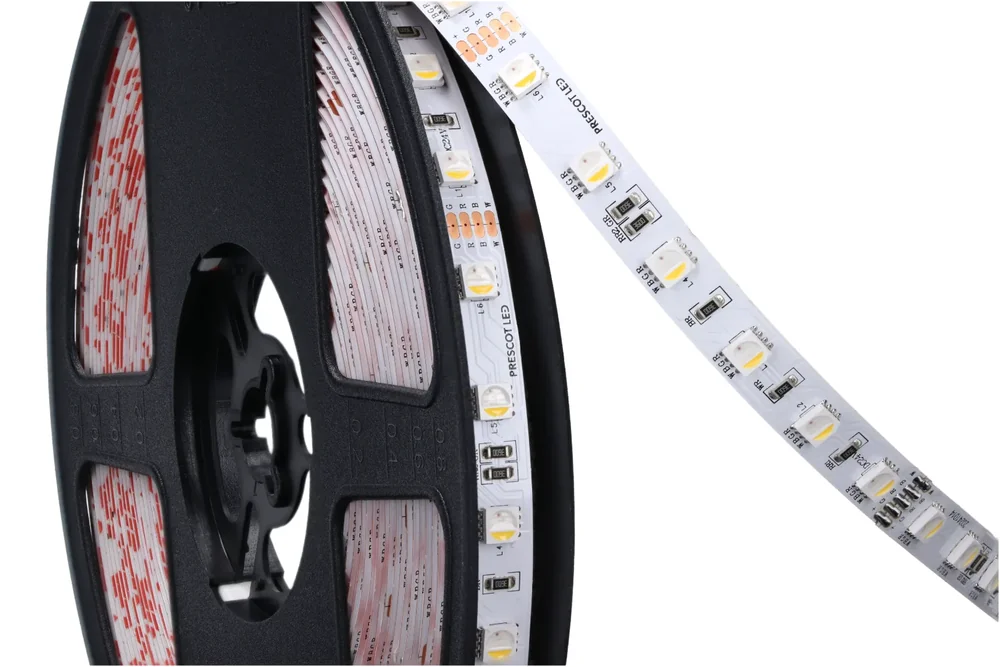
5 lat gwarancjiKolorowa dekoracja i funkcjonalna biel w jednej instalacji, z niezależnym kanałem światła białego.
Poznaj serię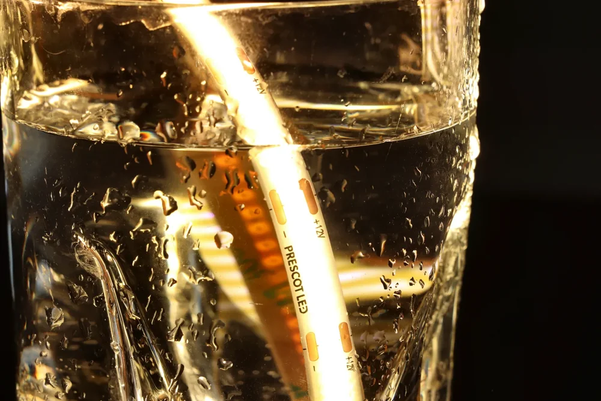
3 lata gwarancjiMikrodiody pod wspólną warstwą luminoforu tworzą gładką linię do mebli, luster i zabudowy.
Poznaj serię 3 lata gwarancji
3 lata gwarancjiAdresowalna linia COB do animacji, płynących efektów i sterowania kolejnymi odcinkami światła.
Poznaj serięNie znaleziono tej serii. Spróbuj wpisać inną nazwę.
RÓWNIEŻ OD PRESCOT
Nasze zasilacze PR-MAD i sterowniki.
Obejrzyj modele z bliska i poznaj ich możliwości.

AUTODETEKCJA 12 / 24 V
Dobierz moc do swojej instalacji. PR-MAD automatycznie rozpoznaje napięcie wyjściowe 12 lub 24 V DC.
Autodetekcja dopasowuje wyjście do taśmy 12 V.
NOWOŚĆ DELUX 3 W 1
Wybierz moc 3, 6 lub 11 W/m. Zobacz, jak taśma z podkładem 3M trafia do profilu, a gotowy zestaw zaczyna świecić.
TWÓJ ZESTAW W 3D
Dobierz taśmę, profil, osłonę i akcesoria. Obejrzyj przekrój, montaż i światło.
02 — ŚWIATŁO W PRZESTRZENI
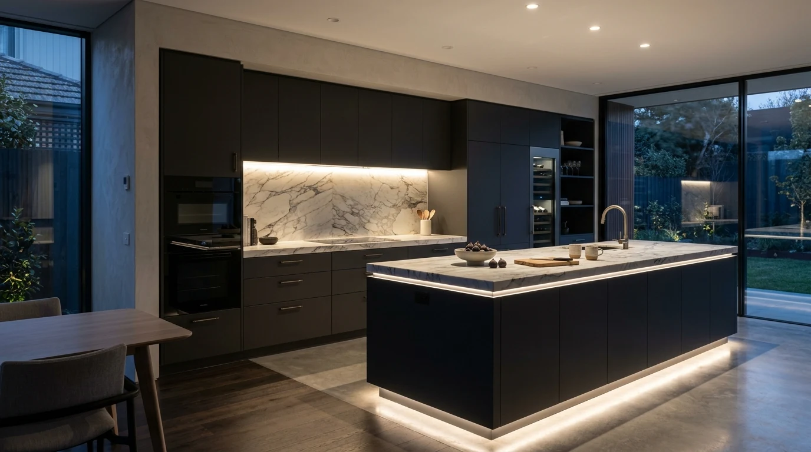
Blat kuchenny potrzebuje światła na całej powierzchni. Dobierz barwę, taśmę i profil, a potem obejrzyj zestaw z bliska.
Sprawdź ten montaż w 3D03 — ZAPLECZE PRESCOT
Własna linia montażowa i laboratorium w Giżycku.
To tutaj powstają i są sprawdzane nasze taśmy.

Dobór komponentów, montaż SMT i kontrola gotowego produktu. Własne zaplecze pozwala nam pracować nad taśmą od projektu do wykonania.
 PRESCOT LAB
PRESCOT LABStrumień świetlny, temperatura barwowa i oddawanie kolorów. Wyniki pomiarów pomagają opisać produkt i sprawdzić jego parametry.
04 — NASZA DYSTRYBUCJA
Nasze taśmy uzupełniamy profilami, zasilaniem,
sterowaniem i oprawami sprawdzonych marek.
Profile aluminiowe, osłony i akcesoria do architektury światła.
Oświetlenie drogowe, miejskie, parkowe i przemysłowe.
Zasilacze do instalacji opartych na taśmach LED.
Kontrolery, piloty i rozwiązania do sterowania strefami.
05 — DLA PROJEKTANTA I INSTALATORA
Sprawdź parametry, poznaj połączenia,
zapisz swój zestaw.
POROZMAWIAJMY O TWOIM PROJEKCIE
PRESCOT sp. z o.o.
ul. Wileńska 1, 11-500 Giżycko
Poniedziałek–piątek
8:00–16:00